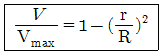
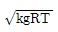
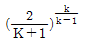
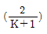
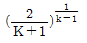
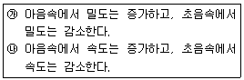
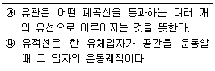
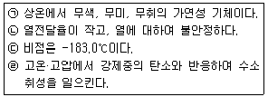
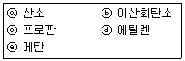
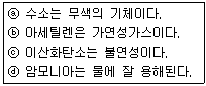

가스기사 (2013-06-02 기출문제)
1과목: 가스유체역학
1. 반지름이 R인 원형관 내의 완전발달된 물의 층류유동 속도분포는 다음과 같이 나타낼 수 있다. 이 원형관 내의 평균 속도는?

- Vmax/4
- Vmax/3
- Vmax/2
- 2Vmax/3
(정답률: 78%)

2. 다음 중 노즐이나 관에서 초음속을 얻는 방법으로 가장 적합한 것은?
- 유체가 축소 노즐을 따라 흐르다가 단면적의 변화가 없는 목(throat)을 거쳐 확대노즐을 통해 팽창될 때
- 유체가 확대 노즐을 따라 흐르다가 단면적의 변화가 없는 목(throat)을 거쳐 확대노즐을 통해 압축될 때
- 유체가 확대 노즐을 따라 흐르다가 단면적의 변화가 큰목(throat)을 거쳐 축소노즐을 통해 압축될 때
- 유체가 축소 노즐을 따라 흐르다가 단면적의 변화가 큰목(throat)을 거쳐 확대노즐을 통해 팽창될 때
(정답률: 59%)
3. 왕복식 압축기를 원심식과 비교하였을 때에 대한 설명으로 가장 거리가 먼 것은?
- 압력비가 낮다.
- 압력변화에 따른 풍량의 번화가 거의 없다.
- 대풍량에 적합하지 않다.
- 기계적 접촉 부분이 많다.
(정답률: 73%)
4. 덕트 내 압축성 유동에 대한 에너지 방정식과 직접적으로 관련되지 않는 변수는?
- 위치에너지
- 운동에너지
- 엔트로피
- 엔탈피
(정답률: 81%)
5. 개수로 유동(open channel flow)에 관한 설명으로 옳지 않은 것은?
- 수력구배선은 자유표면과 일치한다.
- 에너지선은 수면 위로 속도 수두만큼 위에 있다.
- 수평선과 에너지선의 차이가 손실 수두이다.
- 개수로에서 바닥면의 압력은 항상 일정하다.
(정답률: 68%)
6. 압력계의 눈금이 1.2㎫를 나타내고 있으며 대기압이 720㎜Hg일 때 절대압력은 몇 ㎪인가?
- 720
- 1200
- 1296
- 1301
(정답률: 66%)
7. 비압축성 유체가 흐르는 유로가 축소될 때 일어나는 현상 중 틀린 것은?
- 압력이 감소한다.
- 유량이 감소한다.
- 유속이 증가한다.
- 질량 유량은 변화가 없다.
(정답률: 79%)
8. 펌프로 물을 50m 높이에 있는 저장탱크로 보낼 때 이 유체에 가해야 하는 일이 600J/kg이라고 하면 이 물을 3kg/s의 유량으로 효율 60%인 펌프를 사용하여 보낼 때 알맞은 펌프의 동력은 약 몇 kW인가?
- 7.5
- 4.5
- 3
- 1.5
(정답률: 41%)
9. Stokes법칙이 적용되는 범위에서 항력계수(drag coefficient) CD를 옳게 나타낸 것은?
- CD＝16/Re
- CD＝24/Re
- CD＝64/Re
- CD＝0.44
(정답률: 66%)
10. 안지름 200mm의 수평관에 목부분의 안지름이 100mm인 벤튜리관을 설치하여 U자형 마노미터로 압력차를 측정하였더니 수은주의 높이차가 400mm였다. 유량은 몇 m3/s인가? (단, 관내부의 유체는 물이고 벤튜리관의 유량계수는 0.984, 물과 수은의 비중은 각각 1과 13.55이다.)
- 0.⑤3
- 0.079
- 0.104
- 0.126
(정답률: 43%)
11. 일정한 유량의 물이 수평원관에 층류로 흐를 때 지름을 2배로 하면 손실수두는 처음 값의 얼마로 감소하는가?
- 1/4
- 1/8
- 1/16
- 1/32
(정답률: 64%)
12. 상온의 물이 내경 l0mm인 원관 속을 10m/s의 유속으로 흐를 때 관 1m당 마찰손실은 몇 kgf/cm2인가? (단, 관은 수평이며, 물의 점도는 0.012P이고, Fanning 마찰계수 f＝0.0⑤6이다.)
- 1.14
- 11.4
- 114
- 1140
(정답률: 33%)
13. 상부가 개방된 탱크의 수위가 4m를 유지하고 있다. 이 탱크 바닥에 지름 1㎝의 구멍이 났을 경우 이 구멍을 통하여 유출되는 유속은?
- 7.85m/s
- 8.85m/s
- 9.85m/s
- 10.85m/s
(정답률: 56%)
14. 공기 중의 소리속도 C는 C2＝( ∂P/∂ρ)s로 주어진다. 이때 소리의 속도와 온도의 관계는? (단, T는 주위 공기의 절대온도이다.)
- C∝√T
- C∝T2
- C∝T3
- C∝1/T
(정답률: 79%)
15. 온도 20℃, 압력 5㎏f/cm2인 이상기체 10cm3를 등온 조건에서 5cm3까지 압축시키면 압력은 약 몇 ㎏f/cm2인가?
- 2.5
- 5
- 10
- 20
(정답률: 64%)
16. 항력계수를 옳게 나타낸 식은? (단, CD는 항력계수, 0는 항력, p는 밀도, V는 유속, A는 면적을 나타낸다.)
- CD＝D/(0.5ρV2A)
- CD＝D2/(0.5ρVA)
- CD＝(0.5ρV2A)/D
- CD＝(0.5ρV2A)/D2
(정답률: 57%)
17. 수축노즐에서의 압축성 유체의 등엔트로피 유동에 대한 임계압력비(P*/P0)는? (단, k는 비열비이다.)




(정답률: 67%)
18. 어떤 액체에 비중계를 띄웠더니 물에 띄웠을 때보다 축이 10㎝ 만큼 더 가라앉았다. 이 액체의 비중은 약 얼마인가? (단, 비중계의 질량은 25g, 축의 지름은 5mm이다.)
- 0.82
- 0.88
- 0.90
- 0.93
(정답률: 28%)
19. 면적이 줄어드는 통로에서의 등엔트로피 유동에 대한 설명이다. 다음 중 옳은 것은?

- ㉮만 옳다.
- ㉯만 옳다.
- ㉮, ㉯ 모두 옳다.
- 모두틀리다.
(정답률: 69%)
20. 유체의 흐름에 관한 다음 설명 중 옳은 것을 모두 나타낸 것은?

- ㉮
- ㉯
- ㉮, ㉯
- 모두 틀림
(정답률: 68%)
2과목: 연소공학
21. 가연성 혼합가스에 불활성 가스를 주입하여 산소의 농도를 최소산소농도(MOC) 이하로 낮게하는 공정은?
- 릴리프(relief)
- 벤트(vent)
- 이너팅(inerting)
- 리프팅(lifting)
(정답률: 79%)
22. LNG의 유출사고 시 메탄가스의 거동에 관한 다음 설명 중 가장 옳은 것은?
- 메탄가스의 비중은 공기보다 크므로 증발된 가스는 지상에 체류한다.
- 메탄가스의 비중은 공기보다 작으므로 증발된 가스는 위로 확산되어 지상에 체류한다.
- 메탄가스의 비중은 상온에는 공기보다 작으나 온도가 매우 낮으면 공기보다 커지기 때문에 지상에 체류한다.
- 메탄가스의 비중은 상온에서는 공기보다 크나 온도가 낮으면 공기보다 작아지기 때문에 지상에 체류하는 일이 없다.
(정답률: 70%)
23. 가스 폭발의 용어 중 DID의 정의에 대하여 가장 올바르게 나타낸 것은?
- 격렬한 폭발이 완만한 연소로 넘어갈 때까지의 시간
- 어느 온도에서 가열하기 시작하여 발화에 이르기까지의 시간
- 폭발 등급을 나타내는 것으로서 가연성 물질의 위험성의 척도
- 최초의 완만한 연소로부터 격렬한 폭굉으로 발전할 때까지의 거리
(정답률: 80%)
24. 탄화수소(CmHn) 1㏖이 완전연소될 때 발생하는 이산화탄소의 몰(㏖) 수는 얼마인가?
- (1/2)m
- m
- m＋(1/4)n
- (1/4)m
(정답률: 75%)
25. 내연기관의 기본 사이클이 아닌 것은?
- 정적사이클
- 재생사이클
- 합성사이클
- 정압사이클
(정답률: 59%)
26. 석탄의 성질에 있어서 연료비(fuel-ratio)의 정의는?
- 휘발분/고정탄소
- 고정탄소/휘발분
- 회분/고정탄소
- 회분/휘발분
(정답률: 65%)
27. 저위발열량 93766kJ/Sm3의 C3H8을 공기비 1.2로 연소시킬 때의 이론연소온도는 약 몇 K인가? (단, 배기가스의 평균비열은 1.653kJ/Sm3·K이고 다른 조건은 무시한다.)
- 1735
- 1856
- 1919
- 2083
(정답률: 45%)
28. 가스의 폭발등급은 안전간격에 따라 분류한다. 다음 가스 중 안전간격이 넓은 것부터 옳게 나열된 것은?
- 수소＞에틸렌＞프로판
- 에틸렌＞수소＞프로판
- 수소＞프로판＞에틸렌
- 프로판＞에틸렌＞수소
(정답률: 69%)
29. 다음 중 화재의 성장 3요소로 가장 부적합한 것은?
- 연료
- 점화
- 연소속도
- 화염확산
(정답률: 57%)
30. 전실화재(Flashover)와 역화(Back Draft)에 대한 설명으로 틀린 것은?
- Flashover는 급격한 가연성가스의 착화로서 폭풍과 충격파를 동반한다.
- Flashover는 화재성장기(제1단계)에서 발생한다.
- Back Draft는 최성기(제2단계)에서 발생한다.
- Flashover는 열의 공급이 요인이다.
(정답률: 52%)
31. 줄·톰슨 효과를 참조하여 교축과정(throttling process)에서 생기는 현상과 관계없는 것은?
- 엔탈피 불변
- 압력 강하
- 온도 강하
- 엔트로피 불변
(정답률: 62%)
32. 다음 중 열역학적 성질에 속하지 않는 것은?
- 내부에너지
- 일
- 엔탈피
- 엔트로피
(정답률: 53%)
33. 어느 온도에서 A(g)＋B(g)⇄C(g)＋D(g)와 같은 가역 반응이 평형상태에 도달하여 D가 1/4㏖ 생성되었다. 이 반응의 평형상수는? (단, A와 B를 각각 1㏖씩 반응시켰다.)
- 1/16
- 1/9
- 1/3
- 16/9
(정답률: 67%)
34. 어떤 보일러에서 발열량 25000kJ/㎏인 연료를 연소할 때 8㎏의 증기가 발생하였다. 이때 보일러의 열효율은? (단, 발생된 증기의 엔탈피는 2790kJ/㎏, 보일러로 들어가는 물의 엔탈피는 532kJ/kg이다.)
- 68%
- 72%
- 76%
- 80%
(정답률: 43%)
35. 액체연료의 완전연소 시 배출가스를 분석 결과 CO2 : 20%, O2 : 5%, N2 : 75% 이었다. 이 경우 공기비는 약 얼마인가?
- 1.1
- 1.2
- 1.3
- 1.4
(정답률: 41%)
36. 가스압이 이상 저하한다든지 노즐과 콕크 등이 막혀 가스량이 극히 적게 될 경우 발생하는 현상은?
- 불완전연소
- 리프팅
- 역화
- 황염
(정답률: 73%)
37. 연료가 갖추어야 할 조건으로 가장 거리가 먼 것은?
- 운반 및 저장이 용이해야 한다.
- 공해성분의 함량이 적어야 한다.
- 가격이 저렴하며 구입이 용이해야 한다.
- 연소방법에 무관하게 발열량이 커야 한다.
(정답률: 85%)
38. 연료가 산소와 반응하여 완전연소 후 처음의 온도까지 냉각될 때에 단위질량당 발생하는 열량 중 수증기의 증발 잠열을 제외한 값을 무엇이라 하는가?
- 총발열량
- 고발열량
- 저발열량
- 표준생성열
(정답률: 61%)
39. 고열원이 400℃, 저열원이 15℃인 카르노 열기관에서 저 열원의 온도를 15°C로 유지하면서 열효율을 70%로 증가 시키려면 고열원의 온도는 몇 ℃가 되어야 하는가?
- 382
- 439
- 574
- 687
(정답률: 45%)
40. 메탄가스의 공기 중 폭발범위는?
- 3.0~12.5v%
- 5.0~15.4v%
- 6.0~36.0v%
- 12.5~74.0v%
(정답률: 77%)
3과목: 가스설비
41. LPG 공급방식에서 강제기화방식의 특징이 아닌 것은?
- 기화량을 가감할 수 있다.
- 설치 면적이 작아도 된다.
- 한냉 시에는 연속적인 가스공급이 어렵다.
- 공급 가스의 조성을 일정하게 유지할 수 있다.
(정답률: 64%)
42. 왕복식 압축기에서 실린더를 냉각시켜 얻을 수 있는 냉각효과가 아닌 것은?
- 체적 효율의 증가
- 압축효율의 증가(동력감소)
- 윤활 기능의 유지 향상
- 윤활유의 질화 방지
(정답률: 58%)
43. 공기압축기에서 초기 압력 2kg/cm2의 공기를 8kg/cm2까지 압축하는 공기의 잔류가스 팽창이 등온팽창 시 체적효율은 약 몇 %인가? (단, 실린더의 간극비(εο)는 0.06, 공기의 단열지수 (r)은 1.4로 한다.)
- 24%
- 40%
- 48%
- 82%
(정답률: 23%)
44. 5L들이 용기에 9기압의 기체가 들어있다. 또 다른 10L들이 용기에 6기압의 같은 기체가 들어있다. 이 용기를 연결하여 양쪽의 기체가 서로 섞여 평형에 도달하였을 때 기체의 압력은 얼마인가?
- 6.5 기압
- 7.0 기압
- 7.5 기압
- 8.0 기압
(정답률: 68%)
45. 과류차단 안전기구가 부착된 것으로 배관과 호스 또는 배관과 카플러를 연결하는 구조의 콕은?
- 호스콕
- 퓨즈콕
- 상자콕
- 노즐콕
(정답률: 75%)
46. 아세틸렌의 압축 시 분해폭발의 위험을 줄이기 위한 반응장치는?
- 겔로그 반응장치
- I.G 반응장치
- 파우서 반응장치
- 레페 반응장치
(정답률: 70%)
47. 도시가스 원료로써 천연가스(natural gas)의 특징에 대한 설명으로 가장 옳은 것은?
- 천연가스의 C/H 비가 3으로서 가스제조장치가 필요 없다.
- 천연가스의 C/H 비가 3으로서 가스제조장치가 필요하다.
- 천연가스의 C/H 비가 4로서 가스제조 및 정제장치가 필요하다.
- 천연가스의 C/H 비가 4로서 가스개질장치가 필요하다.
(정답률: 53%)
48. 부식방지 방법에 대한 설명으로 틀린 것은?
- 이종의 금속을 접촉시킨다.
- 금속을 피복한다.
- 금속표면의 불균일을 없앤다.
- 선택배류기를 접속시킨다.
(정답률: 78%)
49. 다음 [보기]에서 수소의 성질을 옳은 것으로만 짝지어진 것은?

- ㉠, ㉡
- ㉠, ㉣
- ㉠, ㉢
- ㉢, ㉣
(정답률: 73%)
50. 공기액화분리장치 중에서 원료 공기를 압축기로 흡입하여 15~20㎫으로 압축한 후 중간단에 약 1.5㎫의 압력으로 탄산가스를 흡수탑으로 송출시켜 분리하는 장치는?
- 고압식 액체산소 분리장치
- 저압식 액체산소 분리장치
- 가압식 액체산소 분리장치
- 중압식 액체산소 분리장치
(정답률: 52%)
51. 냉동 능력에서 1RT를 kcal/h로 환산하면?
- 1660㎉/h
- 3320㎉/h
- 39840㎉/h
- 79680㎉/h
(정답률: 78%)
52. 다기능 가스안전 계량기(마이콤 메타)의 기능이 아닌 것은?
- 합계유량 차단기능
- 연속사용시간 차단기능
- 압력저하 차단기능
- 과열방지 차단기능
(정답률: 58%)
53. LP가스의 일반적인 성질에 대한 설명 중 옳은 것은?
- LP가스는 공기보다 가볍다.
- 가압하거나 상압에서 냉각하면 쉽게 액화한다.
- 주성분은 고급탄화수소의 화합물이다.
- 증발잠열이 작다.
(정답률: 72%)
54. 고압저장 탱크설비 중 산소의 저장설비에서 보호시설에 대한 저장능력 대비 안전거리 기준으로 옳은 것은?
- 제1종 보호시설 저장능력 1만 이하 : 14m
- 제2종 보호시설 저장능력 2만 초과 3만 이하 : 11m
- 제1종 보호시설 저장능력 3만 초과 4만 이하 : 20m
- 제2종 보호시설 저장능력 3만 초과 4만 이하 : 15m
(정답률: 48%)
55. 유량이 1.8m3/min, 양정이 20m인 펌프의 효율이 65%일 때, 펌프에 소요되는 전력은?
- 7㎾
- 8㎾
- 9㎾
- 10㎾
(정답률: 64%)
56. 석유화학장치에서 나프타 개질반응에 해당하지 않는 것은?
- 코크스의 카르보닐화 레페반응
- 나프텐의 탈수소반응
- 파라핀의 탄화 탈수소반응
- 나프텐의 이성화반응
(정답률: 60%)
57. 일반용 액화석유가스 압력조징기의 내압 성능에 대한 설명으로 옳은 것은?
- 입구 쪽 시험압력은 2㎫ 이상으로 한다.
- 출구 쪽 시험압력은 2㎫ 이상으로 한다.
- 2단감압식2차용조정기의 경우에는 입구 쪽 시험압력을 0.8㎫ 이상으로 한다.
- 2단감압식2차용조정기 및 자동절체식분리형조정기의 경우에는 출구 쪽 시험압력을 0.8㎫ 이상으로 한다.
(정답률: 56%)
58. 발열량 5000㎉/m3, 비중 0.61, 공급표준압력 100㎜H2O인 가스에서 발열량 11000㎉/m3, 비중 0.66, 공급표준압력이 200㎜ H2O인 LNG로 변경할 경우 노즐변경율은 얼마인가?
- 0.49
- 0.58
- 0.71
- 0.82
(정답률: 50%)
59. 고압가스특정제조시설에서 가스설비 공사 시 지반의 종류가 암반일 때의 허용지지력도는?
- 0.1㎫
- 0.2㎫
- 0.5㎫
- 1㎫
(정답률: 50%)
60. 1차 압력 및 부하 유량의 변동에 관계없이 2차 압력을 일정한 압력으로 유지하는 기능의 가스공급 설비는?
- 가스홀더
- 압송기
- 정압기
- 안전장치
(정답률: 71%)
4과목: 가스안전관리
61. 고압가스 냉동제조시설 중 냉매설비의 안전장치에 대한 설명으로 틀린 것은?
- 파열판은 냉매설비 내의 냉매가스 압력이 이상 상승할 때 판이 파열되어야 한다.
- 파열판의 파열압력은 최고사용압력 이상의 압력으로 하여야 한다.
- 냉매설비에 파열판과 안전밸브를 부착하는 경우에는 파열판의 파열압력은 안전밸브의 작동압력 이상이어야 한다.
- 사용하고자 하는 파열판의 파열압력을 확인하고 사용하여야 한다.
(정답률: 52%)
62. 가스누출 자동차단기의 제조에 대한 설명으로 옳지 않은 것은?
- 고압부 몸통의 재료는 단조용 황동봉을 사용한다.
- 관 이음부의'나사치수는 KSB 0222(관용테이퍼나사)에 따른다.
- 저압부 몸통의 재료는 아연합금 또는 알루미늄합금 다이캐스팅을 사용한다.
- 과류차단 성능은 유량이 표시유량의 1.5배 범위 이내 일 때 차단되어야 한다.
(정답률: 35%)
63. 차량에 고정된 탱크가 후부취출식 탱크인 경우에는 탱크 주밸브 및 긴급차단장치에 속하는 밸브와 차량의 뒷범퍼와의 수평거리를 몇 ㎝ 이상 이격하여야 하는가?
- 30
- 40
- 60
- 100
(정답률: 64%)
64. 차량에 고정된 탱크의 안전운행기준으로 운행을 완료하고 점검하여야 할 사항이 아닌 것은?
- 밸브의 이완상태
- 경계표지 및 휴대품 등의 손상유무
- 부속품 등의 볼트 연결 상태
- 자동차 운행등록허가증 확인
(정답률: 81%)
65. 반밀폐형 강제배기식 가스보일러를 공동배기방식으로 설치하고자 할 때의 기준으로 틀린 것은?
- 공동배기구 단면형태는 원형 또는 정사각형에 가깝도록 한다.
- 동일 층에서 공동배기구로 연결되는 연료전지의 수는 2대 이하로 한다.
- 공동배기구에는 방화댐퍼를 설치해야 한다.
- 공동배기구 톱은 풍압대 밖에 있어야 한다.
(정답률: 54%)
66. 다음 가스 저장시설 중 가장 양호한 통풍시설을 하여야 하는 것은?
- O2
- N2
- H2
- C2H2
(정답률: 70%)
67. 차량에 고정된 탱크에 의하여 고압가스를 운반할 때 설치하여야 하는 소화설비의 기준 중 틀린 것은?
- 가연성 가스는 분말소화제 사용
- 산소는 분말소화제 사용
- 가연성가스의 소화기 능력단위는 BC용, B-10 이상
- 산소의 소화기 능력단위는 ABC용, B-12 이상
(정답률: 55%)
68. 다음 중 가연성 가스이면서 독성가스가 아닌 것은?
- 수소
- 시안화수소
- 황화수소
- 일산화탄소
(정답률: 72%)
69. 가스관련법에서 정의한 용어에 대하여 잘못 설명한 것은?
- 처리능력 : 처리설비 또는 감압설비에 의하여 압축·액화나 그 밖의 방법으로 1일에 처리할 수 있는 가스 의양을 말한다.
- 방호벽 : 높이 2미터 이상, 두께 12센티미터 이상의 철근콘크리트 또는 이와 동등 이상의 강도를 가지는 구조의 벽을 말한다.
- 초저온 용기 : 섭씨 영하 40도 이하의 액화가스를 충전하기 위한 용기로서 단열재로 피복하거나 냉동설비로 냉각하는 등의 방법으로 용기 내의 가스 온도가 내압 온도를 초과하지 아니하도록 한 것을 말한다.
- 액화가스 : 가압·냉각 등의 방법에 의하여 액체상태로 되어 있는 것으로서 대기압에서의 비점이 섭씨 40도 이하 또는 상용의 온도 이하인 것을 말한다.
(정답률: 60%)
70. 도시가스용 압력조정기에 표시하여야 할 사항이 아닌 것은?
- 제조자명 또는 그 약호
- 입구압력 범위
- 품질보증기관
- 가스의 공급방향
(정답률: 63%)
71. 다음 [보기]에서 임계온도가 O℃에서 40℃ 사이인 것으로만 나열된 것은?

- ⓐ, ⓑ
- ⓑ, ⓒ
- ⓑ, ⓓ
- ⓒ, ⓔ
(정답률: 64%)
72. 다음 중 상온에서 액화될 수 있는 가스는?
- 염소
- 산소
- 일산화탄소
- 메탄
(정답률: 60%)
73. 시안화수소(HCN)을 용기에 충전할 경우에 대한 설명으로 옳지 않은 것은?
- HCN의 순도는 98% 이상이어야 한다.
- HCN은 아황산가스 또는 황산 등의 안정제를 첨가한 것이어야 한다.
- HCN을 충전한 용기는 충전 후 12시간 이상 정치하여야 한다.
- HCN을 일정시간 정치한 후 1일 1회 이상 질산구리벤젠 등의 시험지로 가스의 누출검사를 하여야 한다.
(정답률: 67%)
74. 고압가스 냉동제조시설에서 가스설비의 내압성능을 확인하기 위한 시험압력의 기준은? (단, 기체의 압력으로 내압시험을 하는 경우이다.)
- 설계압력 이상
- 설계압력의 1.25배 이상
- 설계압력의 1.5배 이상
- 설계압력의 2배 이상
(정답률: 44%)
75. LPG 소형저장탱크의 설치기준으로 틀린 것은?
- 소형저장탱크는 그 기초가 지면보다 30㎝ 이상 높게 설치된 콘크리트 등에 설치하여야 한다.
- 소형저장탱크는 지상설치식으로 한다.
- 소형저장탱크는 원칙적으로 옥외에 설치하여야 한다.
- 저장량이 3ton인 소형저장탱크에는 높이 1m 이상의 경계책을 설치하여야 한다.
(정답률: 46%)
76. 충전시설의 사용개시 전 및 사용종료 후에는 그 충전시설에 속하는 설비의 이상 유무를 점검하는 외에 충전용 주관의 압력계의 검사주기는 얼마인가?
- 1일 1회 이상
- 매주 1회 이상
- 2주 1회 이상
- 매월 1회 이상
(정답률: 49%)
77. 액화석유가스를 충전받기 위한 차량은 지상에 설치된 저장탱크 외면으로부터 몇 m 이상 떨어져 정지하여야 하는가?
- 2m
- 3m
- 5m
- 8m
(정답률: 59%)
78. 도시가스공급시설 또는 그 시설에 속하는 계기를 장치하는 회로에 설치하는 것으로서 온도 및 압력과 그 시설의 상황에 따라 안전확보를 위한 주요부분에 설비가 잘못 조작되거나 이상이 발생하는 경우에 자동으로 가스의 발생을 차단시키는 장치를 무엇이라 하는가?
- 벤트스텍
- 가스누출검지통보설비
- 안전밸브
- 인터록기구
(정답률: 74%)
79. 다음 [보기]의 가스성질에 대한 설명 중 옳은 것을 모두 바르게 나열한 것은?

- ⓐ, ⓑ
- ⓑ, ⓒ
- ⓐ, ⓓ
- ⓐ, ⓑ, ⓒ, ⓓ
(정답률: 72%)
80. 매몰형 폴리에틸렌 볼 밸브의 사용압력으로 옳은 것은?
- 0.4㎫ 이하
- 0.6㎫ 이하
- 0.8㎫ 이하
- 1㎫ 이하
(정답률: 55%)
5과목: 가스계측기기
81. 가연성가스 중에 포함된 O2를 측정하는데 가장 적당한 분석법은?
- 중량법
- 중화적정법
- 흡수법
- 완만연소법
(정답률: 57%)
82. 건조공기 120kg에 6kg의 수증기를 포함한 습공기가 있다. 온도가 49℃이고, 전체 압력이 750㎜Hg일 때의 비교습도는 약 얼마인가? (단, 49℃에서의 포화수증기압은 88.02㎜Hg이다.)
- 30%
- 40%
- 50%
- 60%
(정답률: 22%)
83. 수은 온도계와 같은 접촉식 온도계는 열역학 법칙 중 어느 것을 이용한 것인가?
- 열역학 0법칙
- 열역학 1법칙
- 열역학 2법칙
- 엔탈피 보존의 법칙
(정답률: 57%)
84. 오르자트 가스분석 장치는 가스를 흡수제에 흡수시켜 그 감소량을 측정하는 장치이다. 연소 가스를 측정할 때의 순서로 옳은 것은?
- 산소 → 일산화탄소 → 이산화탄소
- 이산화탄소 → 산소 → 일산화탄소
- 이산화탄소 → 일산화탄소 → 산소
- 일산화탄소 → 산소 → 이산화탈소
(정답률: 79%)
85. 다음 중 열선식 유량계에 해당하는 것은?
- 델타식
- 에뉴바식
- 스웰식
- 토마스식
(정답률: 56%)
86. 열전대온도계 중 J형의 (＋)측 금속의 조성비율은?
- Cu(55%) : Ni(45%)
- Ni(90%) : Cr(10%)
- 순철
- 순동
(정답률: 56%)
87. 불연속적인 제어이므로 제어량이 목표값을 중심으로 일정한 폭의 상하 진동을 하게 되는 현상, 즉 뱅뱅현상이 일어나는 제어는?
- 비례제어
- 비례미분제어
- 비례적분제어
- 온·오프제어
(정답률: 73%)
88. 금속(Bimetal)온도계의 특징에 대한 설명으로 옳지 않은 것은?
- 온도 지시를 바로 읽을 수 있다.
- 구조가 간단하고 보수가 쉽다.
- 히스테리시스 발생의 우려가 없다.
- 보호판을 내압구조로 하면 압력용기 내의 온도를 측정할 수 있다.
(정답률: 68%)
89. 상대적인 분포현상을 가진 측정값을 나타내며 산포에 의하며 일어나는 오차를 무엇이라 하는가?
- 과오에 의한 오차
- 우연오차
- 계통적오차
- 계기오차
(정답률: 72%)
90. 대기압이 750㎜Hg일 때 탱크내의 기체압력이 게이지압으로 1.98kg/cm2 이었다. 탱크 내 기체의 절대압력은 약 몇 kg/cm2인가? (단, 1기압은 1.0336kg/cm2이다.)
- 1.0
- 2.0
- 3.0
- 4.0
(정답률: 53%)
91. 다음 조작장치 중 다이어프램밸브가 대표적으로 사용되는 것은?
- 공기식 조작장치
- 유압식 조작장치
- 전기식 조작장치
- 혼합식 조작장치
(정답률: 41%)
92. 사용 중인 가스미터의 사용공차는 검정시의 최대허용오차의 몇 배 값으로 정하는가?
- 1배
- 1.2배
- 1.5배
- 2배
(정답률: 58%)
93. 다음 중 연소 분석법이 아닌 것은?
- 완만 연소법
- 분별 연소법
- 혼합 연소법
- 폭발법
(정답률: 42%)
94. 국제단위계(International system of units, SI단위)에 해당하는 것은?
- Pa
- bar
- atm
- kgf/cm2
(정답률: 59%)
95. 화학발광검지기(Chemiluminescence detector)는 Ar gas가 Carrier 역할을 하는 고온(800~900℃)으로 유지된 반응 관내에 시료를 주입시키면, 시료 중의 화합물이 열분해 된 후 O2 가스로 산화된다. 이때 시료 중의 화합물은 무엇인가?
- 수소
- 이산화탄소
- 질소
- 헬륨
(정답률: 39%)
96. 가스크로마토그래피에서 사용되는 검출기가 아닌 것은?
- TCD(Thermal Conductivity Detector)
- FID(Flame Ionization Detector)
- ECD(Electron Capture Detector)
- NDIR(Non-Dispersive Infra-Red)
(정답률: 75%)
97. 감도(感度)에 대한 설명으로 옳은 것은?
- 지시량 변화에 대한 측정량 변화의 비로 다타낸다.
- 감도가 좋으면 측정시간이 길어지고 측정범위는 좁아진다.
- 계측기가 지시량의 변화에 민감한 정도를 나타내는 값이다.
- 측정결과에 대한 신뢰도를 나타내는 척도이다.
(정답률: 64%)
98. 내경이 25m인 원관에 지름이 15㎝인 오리피스를 붙였을 때, 오리피스 전후의 압력수두차가 1㎏f/m2 이었다. 이때 유량은 약 몇 m3/s인가? (단, 유량계수는 0.85이다.)
- 0.021
- 0.047
- 0.067
- 0.084
(정답률: 27%)
99. 서미스터 온도계에 대한 설명으로 옳은 것은?
- 경년변화가 있다.
- 저항변화가 작다.
- 재현성이 크다.
- 흡습 등에 의하여 열화되지 않는다.
(정답률: 43%)
100. 다음 중 가스미터의 필요 구비조건이 아닌 것은?
- 감도가 예민할 것
- 구조가 간단할 것
- 소형이고 용량이 작을 것
- 정확하게 계량할 수 있을 것
(정답률: 74%)